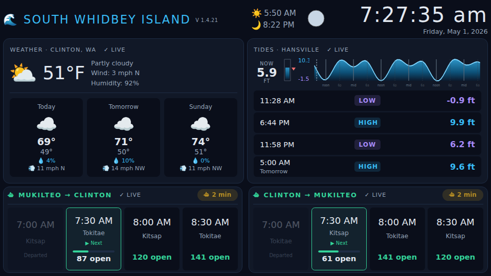
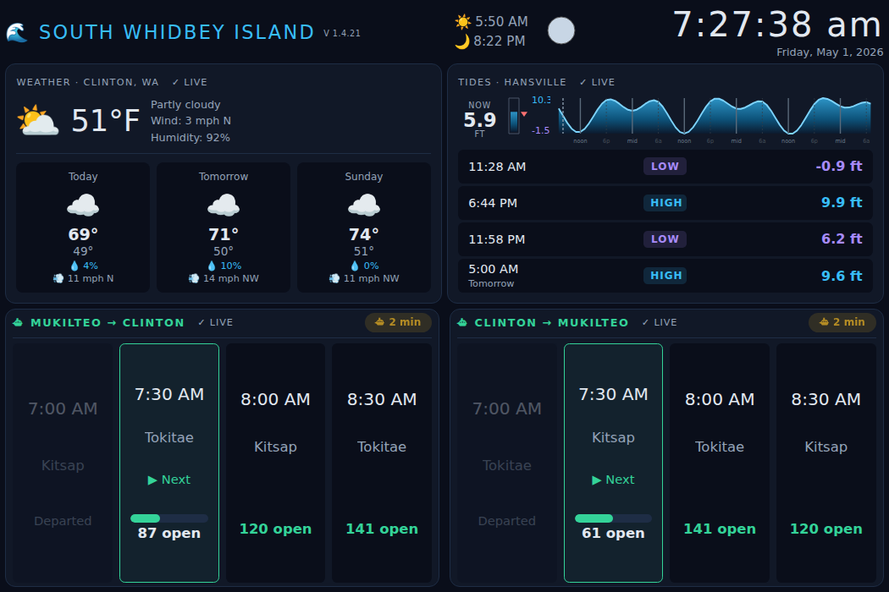
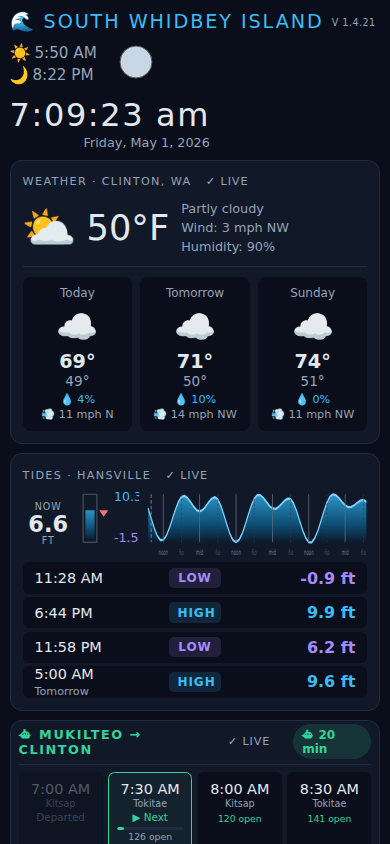

Whidbey Island Dashboard

Debbie and I recently bought a vacation home on Whidbey Island. The house had a couple of unused TVs, and I wanted something useful on them — tides, weather, ferry times. So I built a dashboard.
What It Shows

TV view (960×540) — fits on one screen with no scrolling
- Clock & date
- Sunrise & sunset
- Moon phase — SVG, no images, pure geometry
- 3-day weather forecast — current conditions + highs/lows/wind (Clinton, WA)
- Tide predictions — hi/lo table, sparkline, and gauge (NOAA Hansville station)
- Ferry schedules — both directions (Clinton ↔ Mukilteo) with live space availability
Everything refreshes automatically and shows a staleness indicator per data source.
Works on TV, Phone, and Tesla

Tesla screen (1050×700) — vh-scaled fonts make the ferry times larger and easier to read from the driver's seat

Mobile (390×844) — single column
The layout is fully responsive. Font sizes are vh-scaled, so the Tesla’s
taller screen genuinely renders larger text — not just more whitespace. A phone
gets a single-column stacked layout.
On one trip I was sitting in the ferry line at Clinton and noticed the departure times were hard to read on the Tesla screen. I opened a chat with my AI assistant (OpenClaw) and described the problem. A few exchanges later the fix was committed to GitHub and deployed. By the time I drove off the ferry at Mukilteo the display was fixed.
Vibe Coded with OpenClaw
The project was built entirely through conversation with AI — describing what I wanted, iterating on layout and features, without writing much code directly.
The ferry schedule requires an API token from the Washington State Department of Transportation. When the AI flagged this, I told it to register for one itself using its email account. It navigated to the WSDOT developer portal, filled out the form, received the confirmation, and added the key to the config.
Use It Yourself
The dashboard is live at dashboard.mckoss.com — free for anyone to use. The source is on GitHub.
Running It on Your TV
For a clean full-screen display with no browser chrome, I use Fully Kiosk Browser on a Google TV. It’s an Android app, so it installs directly from the Play Store on any Google TV or Android TV device.
- Install Fully Kiosk Browser from the Play Store on your Google TV
- Open it and enter
https://whidbey-dashboard.mckoss.comas the start URL - Enable Kiosk Mode in the settings to hide all browser controls
That’s it. The dashboard fills the screen with no address bar, no tabs, no extra UI — just the display. It auto-refreshes on its own, so you can leave it running indefinitely.